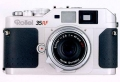

器材库 > 旁轴胶片相机 > 35RF

规格总览
产品类型
可换镜头旁轴胶片相机
发布日期
2002-12
厂家推荐价格
98,000.00 （日元）
使用胶卷/胶片
35mm
镜头卡口
Rollei M
取景规格
取景器
实像距离计式逆向透视取景器
取景范围
87%
取景放大倍率
0.7倍
取景框
40mm、50mm、80mm，手动选择，视差自动补正
对焦系统
对焦方式
手动双像重合，联动范围0.9M-无穷远
曝光控制
测光系统
TTL方式，测光元件为SPD
测光模式
中央重点测光
测光范围
1-19EV
ISO感光度
32-3200
快门
快门类型
机械控制，纵走式，焦平面快门
快门速度
1 - 1/2000秒，B档，X档
过片系统
卷片器
手动快速卷片手柄
电源
电池
2枚1.5V碱性电池（LR44）或 2枚1.55V氧化银电池（SR44）
外观
材质
镁合金外壳
颜色
银色
尺寸
135.5×81×33.5mm
重量
450g
Luft2014-08-13 16:034.25 分
操作性 4.00功能性 4.00美观性 5.00趣味性 4.00耐用性 4.00性价比 4.50
哈斯2014-06-23 20:244.17 分
操作性 4.00功能性 4.00美观性 4.00趣味性 4.50耐用性 3.50性价比 5.00
5zhong2011-04-07 14:554.92 分
操作性 4.50功能性 5.00美观性 5.00趣味性 5.00耐用性 5.00性价比 5.00
宇声2004-12-16 17:054.67 分
操作性 4.50功能性 4.50美观性 5.00趣味性 5.00耐用性 5.00性价比 4.00
工程师2004-10-18 23:114.75 分
操作性 5.00功能性 4.50美观性 5.00趣味性 5.00耐用性 4.50性价比 4.50
小毕2004-10-17 19:364.75 分
操作性 4.50功能性 4.50美观性 5.00趣味性 5.00耐用性 5.00性价比 4.50
zxd6282004-05-11 19:404.42 分
操作性 4.00功能性 4.00美观性 5.00趣味性 5.00耐用性 4.50性价比 4.00
四月山寺2004-02-14 09:434.75 分
操作性 5.00功能性 4.50美观性 5.00趣味性 5.00耐用性 4.50性价比 4.50
产品图 / 样片
禄来 35RF